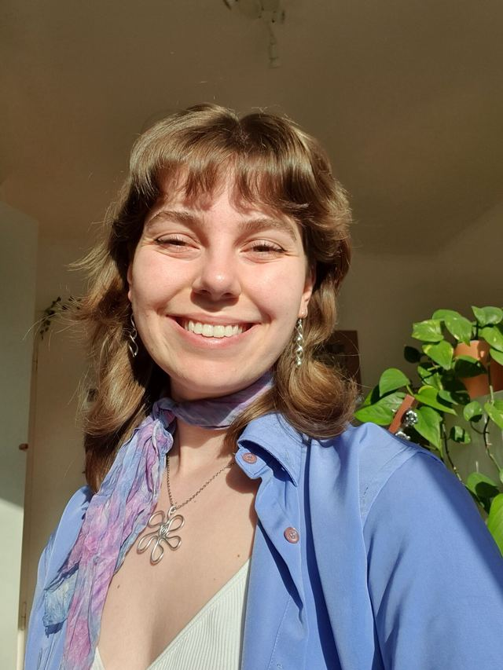

Hi! Ich bin Svea
Ich lebe in Lüneburg und fing 2024 neben dem Studium an, Upcycling-Ohrringe
für mich und meine Freund*innen zu basteln. Aus dem Hobby entstand schnell
handgemacht von Svea, meine Schmuck-Marke, mit der ich meine
Upcycling-Leidenschaft teile.
Ich bin überglücklich, dass wir nun sogar in Schmuckworkshops gemeinsam
neue Schmuckstücke erschaffen und ich eure wundervolle Upcyling-Kreativität
begleiten kann.
Danke, dass du vorbeischaust :)
making of svea
Hier kannst gemütlich den Prozess meiner Upcycling-Ohrringe anschauen. Das Schmuck machen ist für mich viel mehr als nur Basteln. Kreativität, Ruhe, Stolz, ... Mehr dazu im Video ;)
Behind the Scenes
Vom Blütensammeln bis zum Verarbeiten, von der Herstellung bis zur Verpackung. Das alles passiert auf meinem Basteltisch. Verfolge den Herstellungsprozess in der folgenden Bildergalerie oder auf meinem Instagram!
{kind=link}
{kind=link}
{kind=link}
{kind=link}
{kind=link}
Erfahre mehr über die Herstellung meiner Produkte über Instagram! Dort nehme ich dich bei allem mit :)
zu Instagram